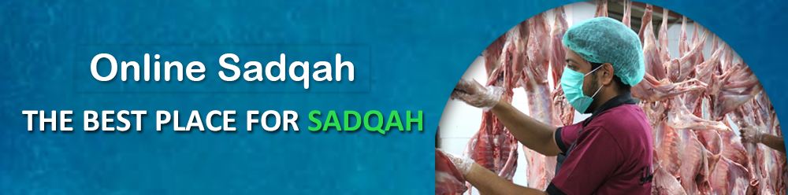

Millions of people's life has changed, millions more awaiting your donation

Every day, more than 1,000 animals are sacrificed as Sadaqqah and Aqiqa across Pakistan and the meat is
distributed among the poor.br
We also find people who are suffering from severe diseases such as T.B and Cancer and give the meat to them. The
food is also cooked for patients at hospitals and sent to hostels for poor students.
For Our Online Sadaqqah & Aqiqa Services
Click Here: Online Donation
Click Here: Online Aqiqa
Click Here: Online Sadqa
Click Here: Corona Effecties
Head Office,
A-25, Bahadurabad Chowrangi Karachi, Pakistan
UAN: 111-729-526
CELL: 92-311-1729526
USA NO +1(716)941 7792
UK NO (+44)115 970 6256
info@saylaniwelfare.com
Useful Links
____
___________________________
Connect With Us


Copyright © 2020 Saylani Welfare